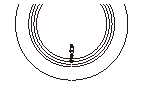
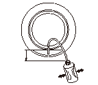
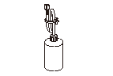

タイヤ パンク応急修理剤の抜取り
修理剤が充てんされたままタイヤを廃棄しないこと。
•
タイヤ パンク応急修理剤を用いて応急修理されたタイヤは、タイヤ内に充てんされた修理剤を抜取って回収する。また、有効期限のきれた修理剤および回収した修理剤には、産業廃棄物扱いのエチレングリコールが含まれているため、オイル、フルードなどの廃油と同等に分別し、処理する。
•
タイヤを取付けの際、バルブは新品に交換する。
ホイールを取外す。
フロント
、
リヤ2WD車
、
リヤ4WD車
タイヤから空気を抜く。
カッターなどでバルブ（A）を根元から切り取り、ホイール穴に残ったバルブ ゴム部をマイナス ドライバ等でタイヤ内へ押し込む。
工具やカッターなどでホイールに傷を付けないこと。
タイヤを作業台に載せて、タイヤを立てる。
バルブ穴（B）から修理剤をこぼさないよう注意すること。

充てん時に使用した空ボトル（A）を用い、タイヤのバルブ穴からホースを差し入れ、ホースの先端が修理剤（B）にひたるまで押込む。
タイヤよりも低位置で、空ボトルをポンピング（圧縮、拡張）して修理剤を吸い取る。タイヤをゆするなどして修理剤を完全に抜取り、修理剤をタイヤ内に残さない。

修理剤を抜取ったボトル（A）は、ホースを図のように折曲げて紐またはテープでしばる。
ホイールのバルブ穴およびタイヤを再使用する場合は損傷箇所の周囲に付着した修理剤を完全にふき取る。次にパンク箇所の修理を行い、バルブを交換する。
タイヤのビード部およびホイール リムとビード合わせ部に修理剤を残さないよう完全にふき取ること。
タイヤ パンク応急修理剤がパンク穴などをふさぐため、傷の程度によっては損傷個所を発見できない場合がある。タイヤ パンク修理をせずに、そのまま走行を続ける場合は、こまめにタイヤ空気圧を点検し、異常（空気圧の低下）がある場合はタイヤを交換する。
